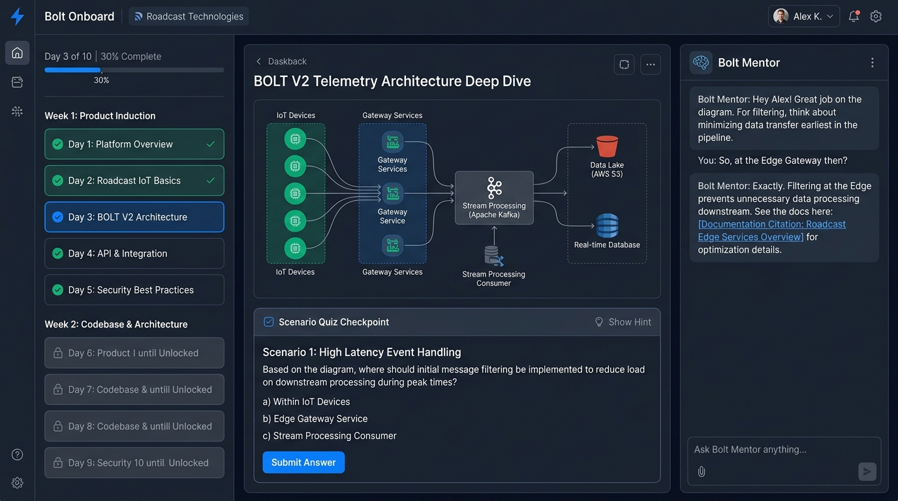

SprintZero: AI-Guided Developer Induction & Codebase Mastery Platform
Designed an automated 2-week developer onboarding system that collapsed engineering ramp-up from 6–8 weeks to 10 working days, cutting senior engineering mentoring tax by 85% with automated LLM gatekeeping.
The SprintZero Learning Console
Live operational interface combining syllabus tracking, telemetry architecture visualizer, scenario quiz checkpoints, and the Bolt Mentor AI sidecar.

Moves from high-level company purpose on Day 1 to business logic (Day 4) and live Go monorepo refactoring labs (Day 9) with automated unlock gates.
Evaluates scenario quizzes and code bug fixes using judge.py against strict rubrics before allowing progression.
In-browser conversational assistant grounded in GitBook specs and code ADRs, resolving developer doubts without interrupting senior leads.
Interactive 10-Day Progression Map
The spiral learning path designed to eliminate the "blank screen shock" of a 15-microservice monorepo.
01 Problem Discovery & The Senior Bandwidth Bottleneck
At Roadcast, engineering velocity was experiencing severe friction during rapid team expansion. Every newly hired developer faced a steep, unguided learning curve across our IoT telematics monorepo (15+ Go microservices, GraphQL codegen, and an Angular 17 frontend).
- The 6–8 Week Ramp-Up: Developers spent nearly two months reading scattered wikis and hesitating to commit production code.
- The Senior Engineering Tax: Senior Leads lost 30 to 40 hours per new hire answering repetitive questions and explaining basic domain rules.
- Production Invariant Breaches: Without gated verification, new hires repeatedly introduced subtle defects in critical business rules—such as corrupting the multi-state licensing engine (Semi-Used license lifecycles) or violating tenant isolation.
02 Stakeholder Discovery: Interviewing New Hires & Tech Leads
To understand where the friction lived, I audited recent developer onramp experiences. A specific case study involved Sanjana Yadav, a talented full-stack engineer who joined Roadcast:
"On Day 1, I wasn't clear on why Roadcast was built the way it was, how our hardware connects to the servers, or what happens when an enterprise client assigns a vehicle license. I had to hunt through 4 different GitBook pages and wait for senior devs to have free time to unblock me."
Concurrently, senior leads reported context-switching fatigue: they were spending 25% of their working week giving the same verbal walk-throughs of Traccar protocols and Docker compose configurations.
03 Product Architecture: The Zero-Reinvention Approach
Rather than embarking on a 6-month greenfield AI platform build, I formulated a zero-reinvention architecture leveraging existing internal Roadcast infrastructure:
Ingested our live GitBook specifications via llms.txt into a RediSearch Vector Store with Docling chunking.
Engineered judge.py utilizing strict semantic rubrics to grade open-ended scenario exams and bug hunts objectively.
Ephemeral isolated containers executing unit tests for new hires' refactoring exercises without touching staging environments.
24/7 conversational assistant grounded strictly in verified ADRs, preventing hallucinations and unblocking developers at midnight.
04 The Pedagogical Framework: 10 Days from Day 1 to Production
I structured the curriculum using a Spiral Pedagogical Model:
- Days 1–2 (Company Purpose & Core Domains): Why Roadcast exists, founders' vision, fleet telematics, fuel sensor math, battery management system (BMS) curves.
- Days 3–4 (System Architecture & Business Rules): Traccar IoT data flow, Redis pipeline, and critical licensing invariants (Active vs Semi-Used vs Available).
- Day 5 (Gateway 1 Assessment): Automated 10-question architectural failure scenario exam. A score of ≥80% is mandatory to unlock Week 2.
- Days 6–8 (Monorepo Deep Dive): Go services, GraphQL mutations, ent ORM migrations, and Angular 17 signal components.
- Days 9–10 (Bug Hunt Lab & Capstone PR): Fixing an intentionally planted bug in an isolated sandbox, undergoing AI code review, and shipping their first real PR to development!
05 Edge Cases, Anti-Cheating & AI Judge Calibration
Automating evaluation with LLMs carries risks of sycophancy or hallucinated passes. I established rigorous system guardrails:
The LLM Judge does not grade on vague "good effort" impressions. It executes against a mandatory checklist (e.g. "Did candidate identify that Semi-Used licenses preserve vehicle history while releasing the IMEI slot?").
Code submissions are validated by running real unit tests in Docker. The AI inspects the test run output, compilation logs, and git diff before rendering a verdict.
06 Measurable Business & Engineering Outcomes
Collapsed new hire time-to-first-PR from 3–4 weeks down to exactly Day 10, with full autonomous development achieved in 2 weeks instead of 6–8 weeks.
Cut senior lead onboarding overhead from 30–40 hours per hire down to <4 hours (only final PR sign-off and culture lunch).
100% of tested developers passed explicit verification on multi-tenancy and licensing lifecycles before receiving push permissions.
Presented to CEO Rahul Mehra and CTO as a premier operational efficiency case study for scaling Roadcast's tech team nationwide.
07 PM Retrospective & Lessons in Internal Tooling
Building for your own engineering peers requires an exceptional standard of rigor. Three fundamental principles guided this product's success:
- Internal Tools Deserve 0-to-1 Product Craft: Just because your users are internal colleagues doesn't mean you can skimp on UX, aesthetics, or onboarding friction. High craft creates high engagement.
- Leverage Existing Infrastructure Over Reinvention: Repurposing our live GitBook feeds and bolt-ai RAG pipelines saved months of unnecessary backend development.
- Objective Gatekeeping Builds Psychological Safety: New hires loved the system because it gave them undeniable proof that they were ready to ship to production without fear of breaking things.
Interested in how I design & execute complex systems?
I'm always open to discussing Product Management, AI agent architectures, and 0-to-1 operational engineering.